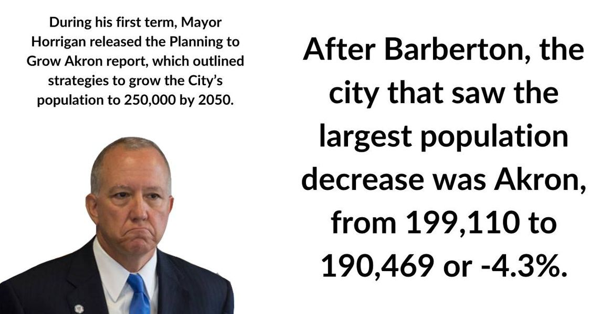

Timeline photos
Dear Dan,
I've been helping my son with Algebra 2 recently. My math skills are really on point these days. So, I thought I'd take some time and carefully analyze how the "Planning to Grow Akron" strategy is going.
Now... I could be wrong. And other mathematicians are welcome to jump in and correct me. But I think you are doing the opposite of what you set out to do.
Have a good day,
@[724505103:2048:Sage]
@[100064805494040:2048:City of Akron, Ohio - Mayor's Office]